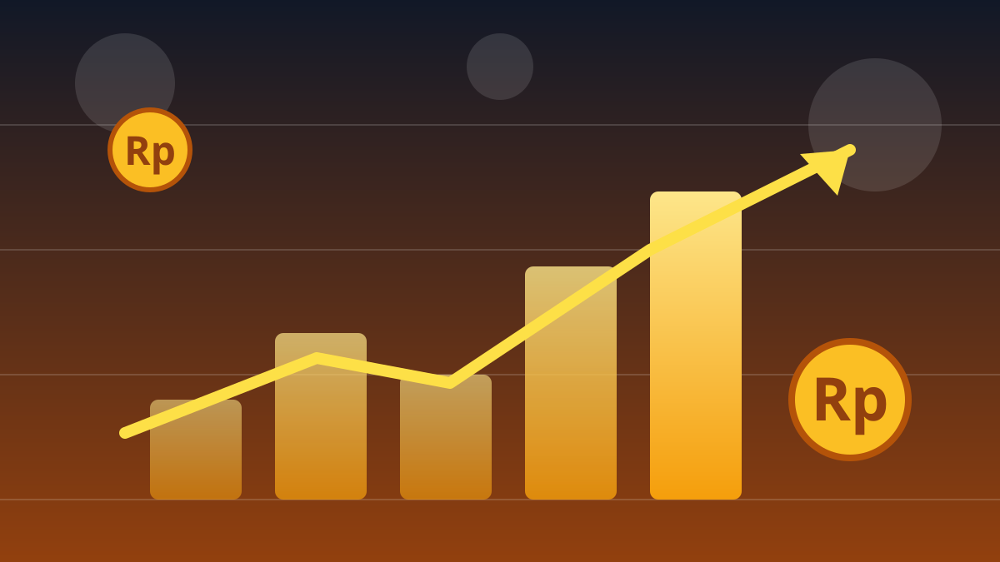

1 / 6

💰 EKONOMI
Tinggal Selangkah ke Rp2,6 Juta!
Emas Antam naik lagi di awal pekan. Nabung 0,5 gram sekarang setara sekali jajan mewah. Geser →
2 / 6
📈
Rp2.594.000 per gram
Harga emas batangan Antam 1 gram dibanderol Rp2.594.000 pada Senin (12/10/2026), naik Rp2.000 dari hari sebelumnya yang di Rp2.592.000. Trennya masih merangkak naik sejak sepekan lalu di level Rp2.580.000.
Level psikologis Rp2,6 juta per gram kini tinggal Rp6.000 lagi. Plot twist: seminggu lalu angkanya masih "cuma" 2,58 juta.
3 / 6
🔄
Buyback juga ikut naik
Harga beli kembali (buyback) menguat Rp7.000 menjadi Rp2.408.000 per gram. Artinya, selisih jual-beli (spread) sekitar Rp186.000 per gram — ini biaya yang lo "bayar" kalau jual dalam waktu dekat.
Catatan pajak: transaksi buyback di atas Rp10 juta kena PPh 22 sebesar 1,5%, sedangkan pembelian emas Antam kena PPh 0,25%.
4 / 6
⚖️
Bandingin dulu sebelum beli
Untuk pecahan favorit: 0,5 gram dijual Rp1.347.000, 5 gram Rp12.745.000, dan 10 gram Rp25.435.000. Semakin besar pecahan, harga per gramnya biasanya makin efisien.
Emas perhiasan 24 karat di pasaran hari yang sama dijual sekitar Rp2,18–2,26 juta per gram dan cenderung stabil — tapi ingat, perhiasan punya ongkos bikin yang bikin nilai jual kembalinya beda.
5 / 6
🌍
Kenapa emas terus naik?
Emas dunia juga lagi panas: naik ke sekitar US$4.194 per ons seiring dolar AS yang melemah dan ketegangan geopolitik yang bikin investor cari aset aman.
Rupiah sendiri sempat menguat tipis ke Rp17.880 per dolar AS — tapi tren emas global tetap mendominasi arah harga di dalam negeri.
6 / 6
🤔
Efeknya ke lo apa?
Buat Gen Z yang mulai nabung, emas batangan pecahan 0,5 gram (Rp1,3 jutaan) masih jadi pintu masuk investasi paling realistis — bisa dicicil, nggak kayak properti.
Tapi ingat: spread Rp186 ribu per gram artinya emas itu buat jangka panjang, bukan buat cuan mingguan. Beli karena butuh nabung, bukan karena FOMO.